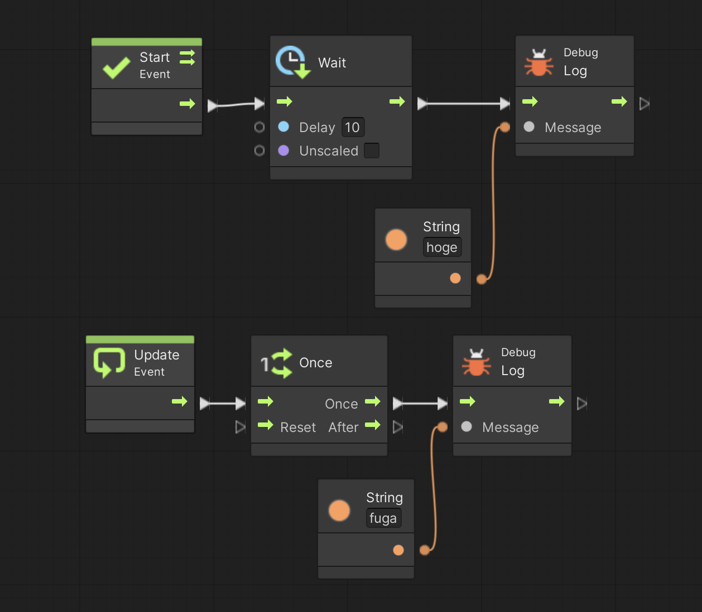

例えば 1 秒おきに敵に弾を撃たせたり、10フレーム後に爆発させたりとか、ゲームを作っているとタイミングを取るために一定期間だけ今の処理を止めて、その間他の処理を実行させておきたいという場合があります。
こういう場合はスレッドによる並列処理を行うのがオーソドックスな方法ですが、スレッドは制御が難しくバグが混入しやすいという問題があります。
一方Unity(というかC#)にはスレッドに似た「コルーチン (Coroutine)」という機能があります。
コルーチンはスレッドと違ってパフォーマンスは良く無い(※)のですが、上で書いた様なタイミング処理を安全かつ簡単に出来るというメリットがあります。
ここではコルーチンの使い方について学びます。
※ コルーチンはシングルスレッドで実行されるため
まず準備です。
テスト用に別の Script Graph を用意します。
Scripts フォルダの中に入り、空いている部分を右クリックしてメニューを表示し、Create → Visual Scripting → Script Graph を選ぶ
アセットフォルダ内に「New Script Graph」というアセットが出来るので「CR Script」に名前を変更する
ヒエラルキーの PROGRAM をクリックしてインスペクタを表示する
Script Machine の Graph の Mouse Script と書いてあるセルに CR Script をドロップする
例として「実行開始後 10 秒たったら hoge と表示させたい」場合を考えてみましょう。
もしコルーチンを使わないと 図1 の様なスクリプトになります。
Start イベントの中にある Get Realtime Since Startup ユニットはゲームが開始してからの経過時間を取得するユニットです。
よって Start イベントが開始したら 10 秒経過するまで While Loop ユニットの中から出ないという処理を行なっています。
また Update イベントでは一回だけ fuga と表示します。
それでは 図1 を実行して下さい。
すると確かに 10 秒後に hoge が表示されるのですが、ゲームの実行自体も停止してしまうために Update イベントも 10 秒経つまで実行されないという問題がおきました(Unity エディタが 10 秒間フリーズします)。
図1. 失敗例
ではコルーチンを使って「実行開始後 10 秒たったら hoge と表示させたい」を行なってみましょう。
改めて詳しく説明すると、コルーチンは Start や Update などのイベント処理を行なっている際に一時的に処理を止め、一定期間が経つまで他の処理を行わせるという機能です。
従ってイベントユニットに対してコルーチンの設定を行います。
※ イベント以外の処理(メソッド)もコルーチン化出来ますが今回は説明を省きます
例えば Start イベントを選択してグラフインスペクタを見て下さい。
Coroutine というチェック欄があると思います。
チェックを入れると Start イベントがコルーチン化されてユニットの右上に矢印が二本表示されます(図2)。
図2. イベントのコルーチン化
イベントをコルーチン化したら Wait ユニットを使って一定期間処理を停止することが出来ます。
Wait ユニットにはいくつか種類があるりますが、今回は Wait For Seconds ユニットを使ってみましょう。
Wait For Seconds ユニットは指定秒数だけ処理を停止し、その間他の処理を行うというユニットで、例えば図3の様に使います。
今回は Unity エディタもフリーズせずに Update イベントがすぐに実行されて fuga と表示され、10秒後に hoge が表示されると思います。
図3. 成功例
コルーチンは複数実行することが出来ますので並列処理の様なことも可能です。
※ ただしマルチスレッドではなくてシングルスレッドで実行するので効率が良くなる訳ではありません
例えば図 4 では 3 つのコルーチンを実行しています。
それぞれのコルーチンで何をしてるかについては実際に実行して確認してみて下さい
図4. 複数のコルーチンの実行